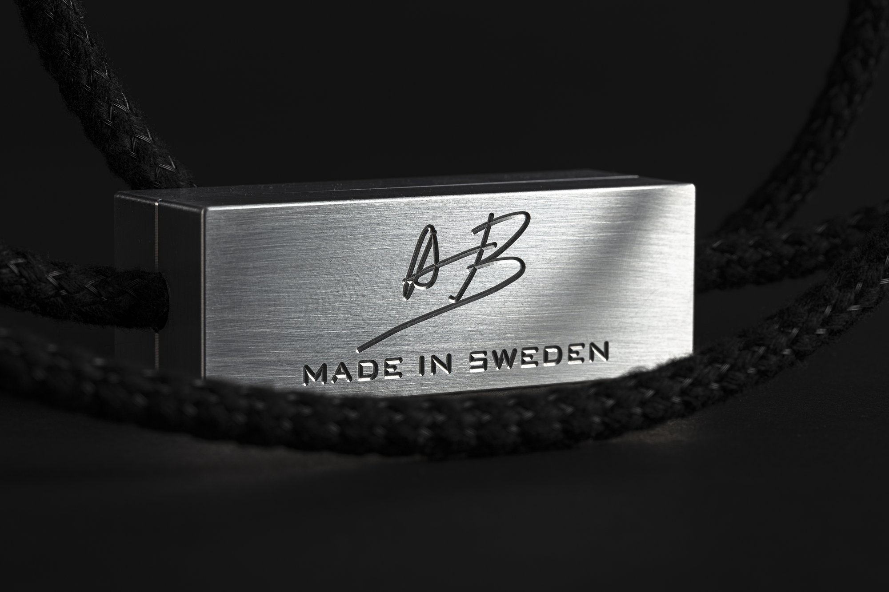

About Us
We are specialized in the design and production of high end audio/tech products and accesories.
Being raised in a house where there were amplifiers, transformers, pcb:s etc where ever you looked and music playing from somewhere 24/7 I didn't have much choice but to listen to a lot of music. As far as I can remember I have been comparing components, designs and big and small changes that my father made to determine which was the best and what should go in to production. When I was younger I was mosly interested in listening and also playing music myself, but as I grew older I started to help out in the factory and lab, learning a lot from my father. For the last couple of years I have also been more involved in the development of new products, making all mechanical drawings and more.
From all this I have learned a lot of what makes a difference to the sound and music and with this new brand I have taken my own thoughts and designs and made products that I feel can make a difference for peoples listening experience and I am trying to complement and find solutions not many others have thought about.
I hope we will contribute to your listening experience and to the audio world.
Enjoy the music.
//Alexander Bladelius
Social Media
Follow ab_tech_sweden on Facebook & Instagram to get frequent updates on what is going on at AB-Tech.
